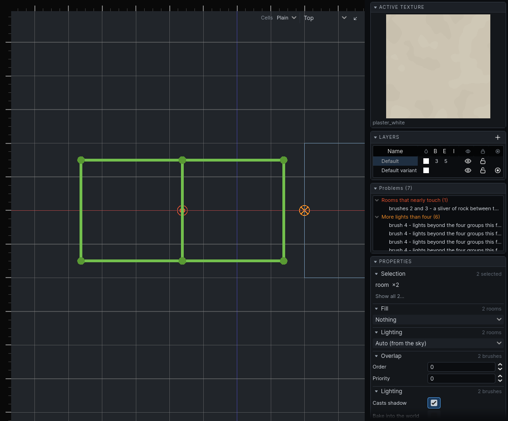

Problems
The editor finds two kinds of problem: what is wrong with the map as it stands — rooms carved ambiguously, walls you can see out of — and surfaces the last bake could not light properly. What each warning means for the world is in Baking and Rooms and portals.
The Problems panel
When there is anything wrong, a Problems panel appears in the right panel with a count. Warnings are grouped by kind, most serious first. Click a row to select what it is about and move every view onto it. Hover a row for advice.
| Group | What is wrong | Fix |
|---|---|---|
| Windows into the void | a wall with a see-through texture and nothing but rock behind it, so the room shows its own outside | texture it with something solid, or carve what is meant to be seen through it |
| Rooms that nearly touch | a sliver of rock between two rooms, too thin to be a wall | abut the rooms to divide the space, or overlap them to make it one |
| Rooms that overlap ambiguously | two equal rooms overlap, so which one owns the overlap is arbitrary | resize one of them |
| Too large for an atlas | a face needs more lightmap than an atlas holds, so it has none and renders unlit | raise the face's lightmap scale (coarser), or split it |
| More lights than four | a face or prop reached by more than four groups of lights; the extras were dropped | group lights that belong to one effect, or move a light |
| Atlas spent on black | a large face almost no light reaches, holding lightmap space for nothing | raise its lightmap scale, or light it |
| Changed in the game since saving | something the map names — a texture, a model, a sound — is gone, or is now provided by something else | check the map still looks right; saving it records what the game provides now |
A window into the void selects the wall itself, so the row takes you to the face to retexture. Room warnings are true of the map as it is now. Bake warnings describe the last bake, which may be an edit or two old. Bake again to refresh them.
Long groups list the first rows and end in "…and N more".

Markers in the views
The 2D views mark each problem where it is, in the same colour as its group. A wall you can see out of is drawn as the whole wall in red rather than as a marker, in both the 2D views and the 3D one; see Texturing.
Press O, or View → Warning Markers, to hide or show the markers while working on something dense. Nothing is drawn in the game.
Recompiling the whole level
The editor carves only what an edit reaches, and keeps the rest as it was. If a wall, a room or an opening looks wrong in a way no edit explains, choose Tools → Recompile Whole Level: the level is carved again from nothing, as if it had just been opened without its saved worldrep. A window says it is working; on a large level it takes as long as opening it cold. It changes nothing you authored, and there is nothing to undo.
The message log
Tools report what they did, and why they refused, in the status bar beside the grid. Click the log button there, or choose View → Message Log, to see the recent messages: white for information, green for done, yellow for warnings, red for errors. The log stays open until you close it the same way.
The section itself turns red for a moment whenever an error is written, so one arriving while you are looking at the views is still something you see.